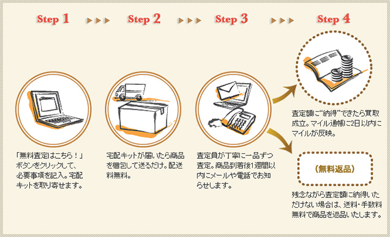

プレスリリース
2008年9月16日
株式会社ネットマイル
ネットマイル社、デファクトスタンダード社と提携
箱に詰めて送るだけのカンタンブランド査定
『ネットマイル ブランド買取』のサービス開始
～ 眠っているブランド品をマイルで買い取ります！ ～
インターネット上の共通ポイントプログラムを運営する株式会社ネットマイル（本社：東京都千代田区、代表取締役社長：山本雅、以下、ネットマイル社）は、ブランド品インターネット買取サービス『ブランディア』を運営する株式会社デファクトスタンダード（本社：東京都品川区、代表取締役社長：竹内拓、以下、デファクトスタンダード社）と提携し、箱に詰めて送るだけのカンタンブランド査定『ネットマイル ブランド買取』のサービスを、本日2008年9月16日（火）14：00より開始いたします。
『ネットマイル ブランド買取』は、ブランド品インターネット買取サービス『ブランディア』（※）で申込・査定を行い、買取が成立すると、買取金額の2倍のマイルが付与されるサービスです。
※ 『ブランディア』はインターネットを活用した買取を行うことで店舗管理費や人件費を抑え、その分、より高額な買取金額としてお客様への還元を実現したサービスです。
■ 『ネットマイル ブランド買取』 サービス概要
| サービス名 | ネットマイル ブランド買取 |
|---|---|
| サービス開始日 | 2008年9月16日（火）14：00 ～ |
| 内容 | ブランド買取サイト『ブランディア』で査定を行い、買取が成立すると、「買取金額の2倍」のマイルを付与。 例）買取金額10,000円 ⇒ ネットマイル20,000mile |
| URL | http://brand.netmile.co.jp/ ※ 9月16日（火）14：00よりご確認いただけます。 |
■ 『ネットマイル ブランド買取』 サービス案内図
また、サービス開始に伴い、2008年9月16日（火） ～ 12月23日（火）の期間中に通常の交換レートのマイルに加え、買取金額の5％mileが付与される「買取マイル増量キャンペーン」を実施いたします。
■ 「買取マイル増量キャンペーン」 概要
| 期間 | 2008年9月16日（火） ～ 2008年12月23日（火） |
|---|---|
| 内容 | 期間中に『ネットマイル ブランド買取』をご利用された方に、通常の交換レートのマイルに加え、買取金額の5％mileをプレゼントいたします。 ※ プレゼントされるマイルは、買取金額の5％mileとなります。 ※ 2008年12月23日（火）までに査定申込をし、買取が成立された方のみキャンペーン参加の対象となります。 例）買取金額 10,000円の場合 20,000mile ＋ 買取金額の5%mile（500mile） ⇒ 合計20,500mile |
ネットマイル社ではこれからも、累計登録会員数約392万ユーザーの利便性向上を目指し、ユーザーサービスの拡充に努めてまいります。
【株式会社デファクトスタンダード】
http://www.defactostandard.co.jp/
使わなくなったブランド品・アパレル・雑貨などを、インターネットを通じてお客様から購入。メンテナンス後、それぞれの商品に合ったチャネルを通じてセカンダリー販売を行う。インターネットを活用し、とても簡単に、とても効率的に「買取」を行う新たなビジネスモデルを展開している。地球環境にやさしい循環型社会、あらゆる面で無駄を出さないシステムを通じて、環境問題にも注力している。
| 社名 | 株式会社デファクトスタンダード |
|---|---|
| 代表取締役社長 | 竹内 拓 |
| 所在地 | 〒141-0031 東京都品川区西五反田7-17-3 五反田第二長岡ビル 2Ｆ |
| 資本金 | 8,975万円 |
| 設立 | 2004年4月 (創業2000年10月） |
| 事業内容 | ・インターネットに特化した買取サイト『ブランディア』の運営 ・インターネット及びモバイルのサイトを通じたブランド、時計、アパレル、アクセサリー等の販売 ・ECサイト運営代行 |
【株式会社ネットマイルについて】
http://www.netmile.co.jp/
2000年11月設立。三井物産株式会社の連結子会社で、インターネット上の共通ポイントプログラム「ネットマイル」を運営。同社のIT事業戦略の一端を担う。
「ネットマイル」は、2001年4月にサービスを開始。累計加盟サイト数1,000サイト、累計登録会員数約392万人（2008年8月末現在）の規模は、日本最大級。 2007年12月、インターネット業界最大規模のオンラインイベントである『 Web of the Year 2007 』ポイント部門で第1位に選ばれる。
| 社名 | 株式会社ネットマイル |
|---|---|
| 代表取締役 | 山本 雅 |
| 所在地 | 〒101-0054 東京都千代田区神田錦町3-26 一ツ橋 SIビル 9F |
| 資本金 | 396百万円 |
| 設立 | 2000年11月7日 |
| 事業内容 | 1 ： インターネット市場におけるユニバーサルポイントプログラム「ネットマイル」のサービスを運営 2 ： ネットマイル会員を活用した、大規模ネットリサーチの運営 |
| 出資企業 | 三井物産株式会社、トランスコスモス株式会社 他 |
＜当リリースに関する報道関係者お問い合わせ先＞
株式会社ネットマイル 広報担当 ： 江澤・村井
Email ： 
TEL ：